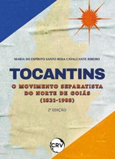

O livro Tocantins: O Movimento Separatista do Norte de Goiás (1821-1988), de Maria do Espírito Santo Rosa Cavalcante, retrata a trajetória histórica da luta pela criação do Estado do Tocantins. A autora resgata desde os primeiros indícios separatistas nos séculos XVII e XIX, passando pela ocupação econômica baseada na mineração aurífera no século XVIII, até as mobilizações políticas mais recentes. A obra destaca o papel de Theotônio Segurado em 1821, as eleições para representantes nas Cortes de Lisboa, os manifestos separatistas da imprensa no final do século XIX e a continuidade do movimento entre os anos 1950 e 1980, culminando com a aprovação do projeto de criação do Estado do Tocantins em 1988.
